Hình Ảnh Môi Trường Đẹp
Dưới đây là một số thủ đô, đất nước có môi trường tương đối xanh-sạch-đẹp và có cảnh quan môi trường ấn tượng. Nếu có cơ hội nãy ghé qua những đất nước này để chiêm ngưỡng không khí, cũng như thiên nhiên ở đây nhé!
Đà Nẵng - Việt Nam
Đà Nẵng là một trong những thành phố lớn và phát triển nhanh nhất tại Việt Nam... Thành phố không chỉ là trung tâm kinh tế, chính trị, văn hóa mà còn là điểm du lịch nổi tiếng với môi trường sống đáng mơ ước.


Mặc dù còn một số thách thức về xử lý rác thải, nhưng Đà Nẵng được xem là thành phố đáng sống nhờ môi trường sạch sẽ và không khí trong lành.
Vancouver - Canada
Vancouver là thành phố lớn nhất ở tỉnh British Columbia, nổi tiếng với thiên nhiên hùng vĩ, khí hậu ôn hòa và chính sách môi trường nghiêm ngặt.


Vancouver được mệnh danh là một trong những thành phố sạch nhất thế giới.
Auckland - New Zealand
Auckland nổi tiếng với môi trường trong lành, nhiều không gian xanh và chính sách phát triển bền vững.

Auckland luôn nằm trong top thành phố có chất lượng sống tốt nhất thế giới.
Đan Mạch
Đan Mạch hiện là quốc gia thân thiện với môi trường, khi hậu tốt nhất thế giới nhờ các chính sách hiệu quả để giảm phát thải khí nhà kính và ngăn chặn biến đổi khi hậu. Quốc gia được xếp vào hạng cao nhất trong việc quản lý chất thải rắn
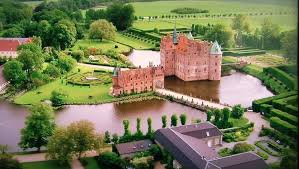
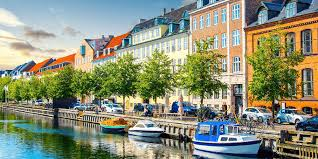
“Rác thải thực sự không phải là rác” - đó có lẽ là câu nói mà nhiều người Đan Mạch đã thuộc nằm lòng. Không chỉ là lời nói, nhiều năm qua, Đan Mạch - được mệnh danh là quốc gia đi đầu trong việc tận dụng rác thải, thực phẩm thừa, do đó môi trường ở Đan Mạch mới xanh sạch đẹp đến vậy.
Thụy Sĩ
Thụy Sĩ có hệ thống xử lý rác và nước thải cực kỳ hiệu quả.Ngoài ra ở đây bảo tồn thiên nhiên rất tốt, có nhiều hồ và núi sạch đẹp
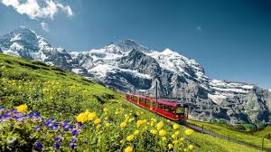
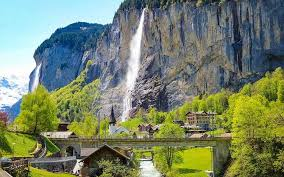
Nhờ có nhiều hồ và núi sạch đẹp nên Thụy Sĩ là một trong những nơi đáng để thăm quan và du lịch.
Na Uy
Môi trường ở Na Uy được đánh giá là trong lành, xanh sạch và bền vững hàng đầu thế giới.
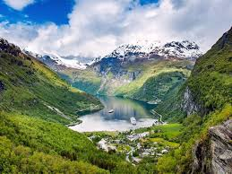
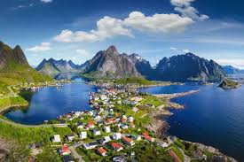
Na Uy là hình mẫu lý tưởng về sống xanh và phát triển bền vững.
Amsterdam-Hà Lan
Được hình thành từ một làng chài nhỏ vào thế kỷ 12. Ngày nay, nó là một thành phố hiện đại, mộng mơ và đầy hấp dẫn. Với những ngôi nhà nhiều màu sắc, chiếc cầu cổ kính và hệ thống kênh đào
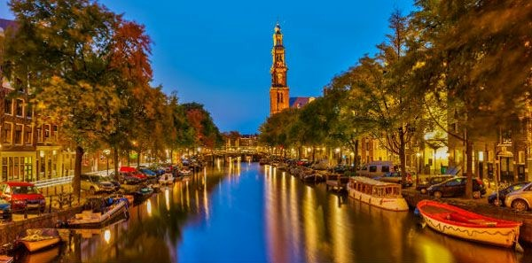
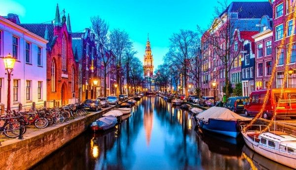
Amsterdam là một trung tâm phố cổ lớn nhất châu Âu. Khám phá vẻ đẹp thơ mộng của thành phố này là một trải nghiệm không thể thiếu trong cuộc đời.
Athens - Hy Lạp
Athens cũng là thành phố lớn nhất Hy Lạp. Với lịch sử hình thành ít nhất 3000 năm, Athens nằm trong những thành phố cổ nhất thế giới. Ngày nay, Athens là thành phố lớn thứ 8 châu Âu và trở thành trung tâm kinh doanh hàng đầu trong khối Liên minh châu Âu. Thành phố Athens đánh dấu vị thế của mình trong chính trị, văn hóa, công nghiệp, tài chính và kinh tế ở Hy Lạp. Với những ai yêu thích lịch sử và nguồn gốc của nhân loại,
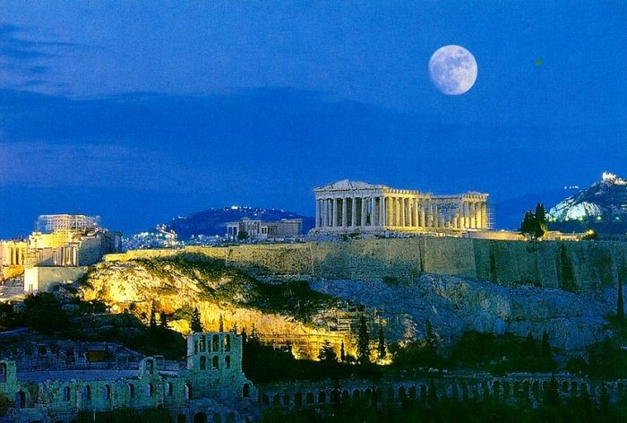
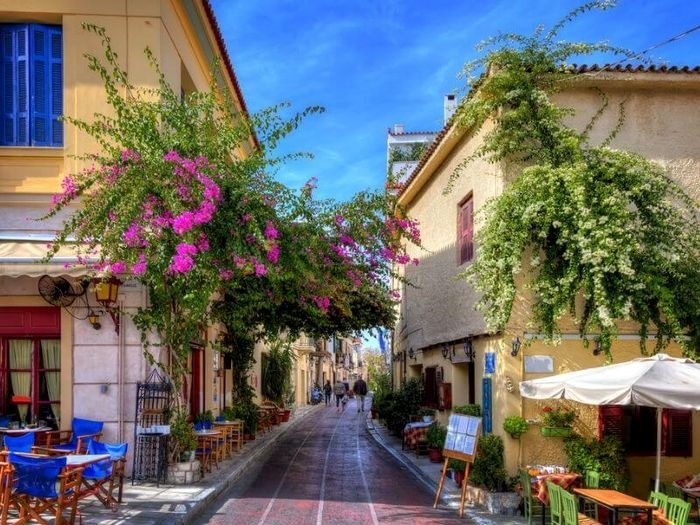
Athens là điểm đến không thể bỏ qua. Hãy ghé qua khi bạn có dịp đến Hy Lạp để khám phá thành phố mang màu sắc cổ điển với những nét kiến trúc độc đáo.
Ankara - Thổ Nhĩ Kỳ
Ankara nằm ở độ cao trung bình 938 mét so với mực nước biển, ở vùng đồng bằng rộng lớn ở miền trung Anatolia. Ankara tên trước đây là Angora, thủ đô Thổ Nhĩ Kỳ, là tỉnh và thành phố lớn thứ hai của Thổ Nhĩ Kì sau Istanbul. Ankara là thủ đô, trung tâm hành chính và nhiều nền văn minh vĩ đại có lịch sử từ thời đồ đá của Thổ Nhĩ Kỳ, đi dọc những con phố ở đây bạn sẽ thấy được sự pha trộn của các yếu tố hiện đại và lịch sử cổ kính.
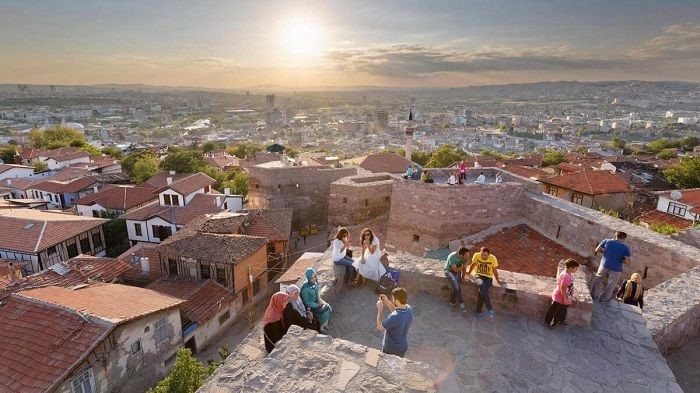
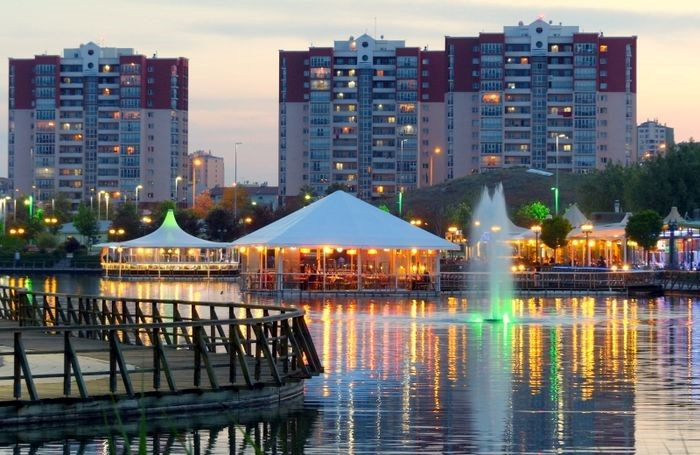
Du lịch Ankara Thổ Nhĩ Kỳ mang đến cơ hội duy nhất để trải nghiệm các nền văn hóa và kiến trúc Thổ Nhĩ Kỳ.
Seoul - Hàn Quốc
Một trong những nền kinh tế phát triển hàng đầu châu Á, cũng như về cảnh đẹp
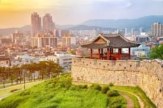
Nhắc tới Hàn Quốc, chúng ta không thể không nhắc tới Núi Namsan, Hồ Seokchon, Suối Cheonggye Cheon
Singapore
Singapore là một quốc đảo nhỏ nằm ở Đông Nam Á, gồm một đảo chính và nhiều đảo nhỏ xung quanh
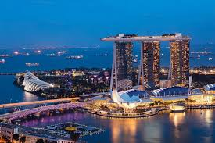
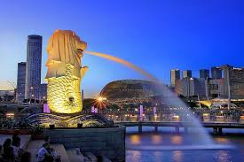
Dù diện tích không lớn, Singapore lại là một trong những quốc gia phát triển và hiện đại nhất Đông Nam Á.
Thái Lan
Thái Lan (tên chính thức: Vương quốc Thái Lan) là một quốc gia nằm ở khu vực Đông Nam Á, nổi tiếng với văn hóa đặc sắc, nền du lịch phát triển, và sự kết hợp hài hòa giữa truyền thống và hiện đại
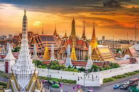
Thái Lan là một trong những nền kinh tế lớn ở Đông Nam Á, nổi bật trong các lĩnh vực: du lịch, nông nghiệp, sản xuất ô tô và linh kiện điện tử.
Nhật Bản
Thái Lan là một trong những nền kinh tế lớn ở Đông Nam Á, nổi bật trong các lĩnh vực: du lịch, nông nghiệp, sản xuất ô tô và linh kiện điện tử.
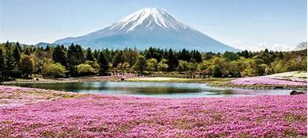
Đức
Môi trường ở Đức được đánh giá rất cao nhờ ý thức bảo vệ môi trường của người dân và các chính sách hiệu quả từ chính phủ. Người dân Đức có thói quen phân loại rác rất nghiêm túc, góp phần không nhỏ vào việc giảm thiểu ô nhiễm. Các thành phố ở Đức sạch sẽ, có nhiều không gian xanh, tạo nên môi trường sống trong lành và chất lượng. Bên cạnh đó, Đức là một trong những quốc gia tiên phong trong việc sử dụng năng lượng tái tạo như điện gió và điện mặt trời. Hệ thống giao thông công cộng hiện đại, tiện lợi và thân thiện với môi trường cũng giúp giảm đáng kể lượng khí thải ra không khí.
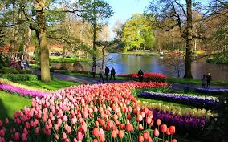
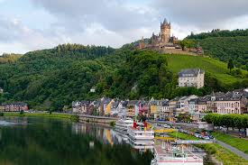